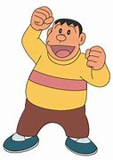
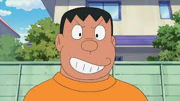

 Jiyan is a strong and quick-tempered local bully. He also frequently steals other children's stuff (especially Nobita's and Suneo's) under the pretext of "borrowing" them, unless the toy is damaged.
Gian is known for his overconfidence in his terrible singing and cooking skills, of which he constantly abuses to torture his surroundings,as he was never aware of these flaws. He is recognized by his large build (might partly be contributed by obesity) as well as his mean and aggressive behavior. He "rules" the neighborhood with force, often at the physical expense of other children, especially Nobita, who often resorts to asking Doraemon for gadgets to get even on him.
He appears to be just as dependent on Nobita as Nobita is on Doraemon as he constantly tells him what to do despite Nobita's protests. In addition, he has a tendency to steal or rob others, usually Suneo, who offers to be Gian's sidekick on most occasions.